For Control4 dealers and programmers
Open a project backup. Get the as-built.
Site Sheet reads a Composer .c4p file and lays out every device, port and wire in the system: a signal-flow schematic, an inventory by room, the IR and serial map, the network sheet, the programming, a list of what's broken, and a closeout packet ready to print.
Free. Backups are read on your computer and never uploaded.
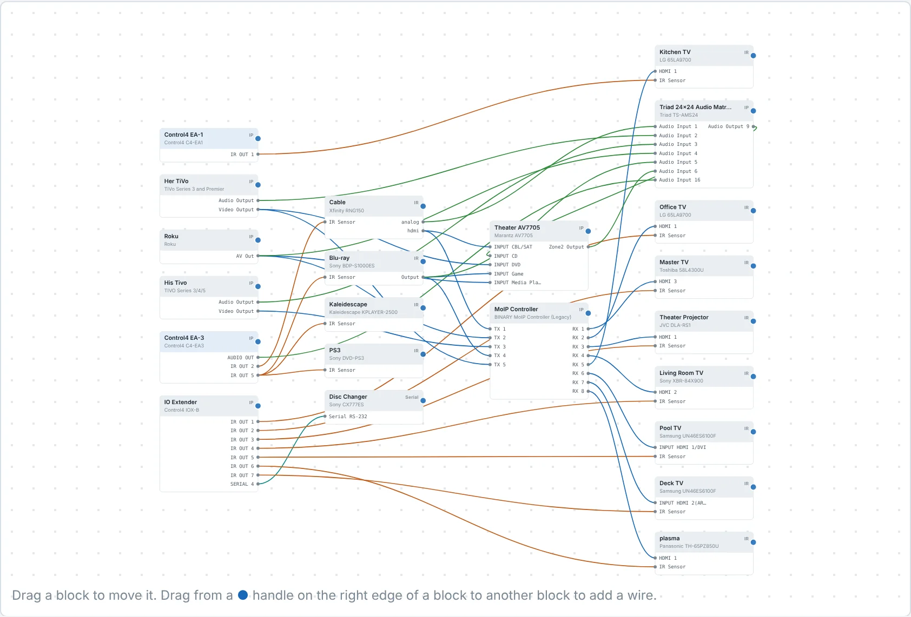
A real 29-device project, drawn straight from its backup. Names changed for privacy.
Schematic
The wiring diagram Composer never gives you
Every wired device becomes a block with its real port names: IR OUT 5, RX 3, INPUT CBL/SAT. Blocks are arranged left to right by signal flow, from controllers and sources through switching to receivers and displays.
- IR, serial, HDMI and audio wires in their own colors, each one toggleable
- AV Path Setters and other virtual drivers are skipped, so a wire runs from the source to the input it really feeds
- Drag blocks anywhere. The layout is saved per project
- Export the drawing as SVG for Visio, Illustrator or a closeout packet
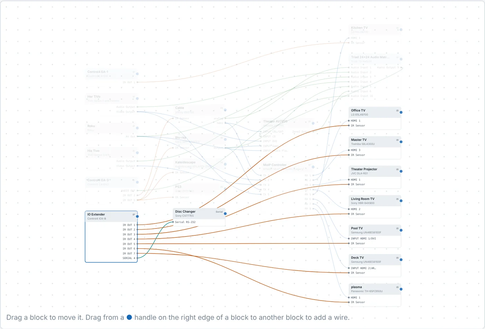
Builder
Draw in what the project doesn't know about
Composer only knows the gear it controls. Add your own blocks for the network switch, patch panel or speakers, then drag from one block to another to run a wire. Name the ports, set the wire type, and it's saved with the project.
On a lighting and IP job with no AV wiring at all, Add all puts every device on the canvas so you can draw the network yourself.
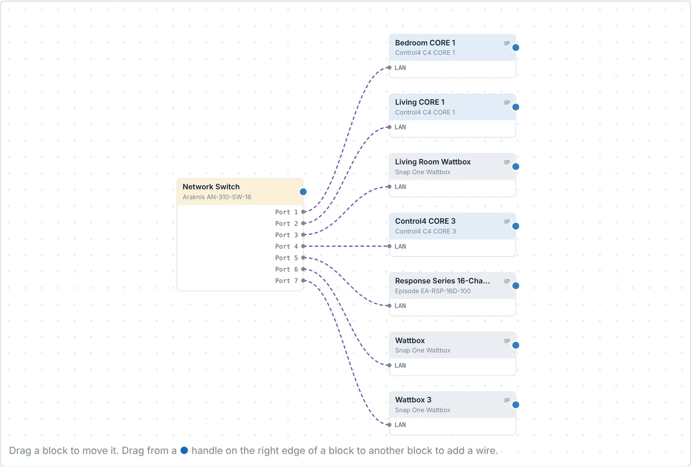
Programming
What every button and event does
The Programming tab reads the project's programming without opening Composer: each event and the lines it runs, nested conditionals included, plus lighting scenes with levels and ramp times, keypad buttons with their behaviors and LED colors, timers, custom buttons and variables.
- Pick a device to see every event and scene that touches it
- Device and scene names fill in where Composer stores only an ID
- Room events have no names in a backup: name one once and it reads that way in every project
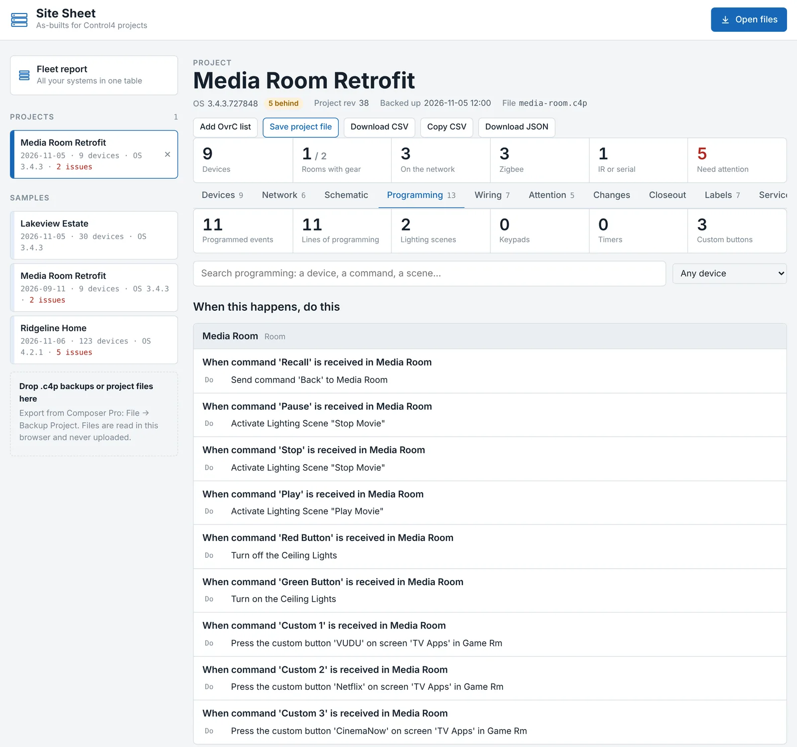
Compare
What changed since the last visit
Open two backups of the same job and the Changes tab lists every difference: devices added or removed, IP and MAC changes, firmware and driver updates, renames and room moves, and every emitter or input that was rebound.
- Always reads oldest to newest, using the time each backup was made
- A port that now feeds something else shows as one rebind, not a remove and an add
- Copy a plain-text summary straight into a service ticket, or download it as CSV
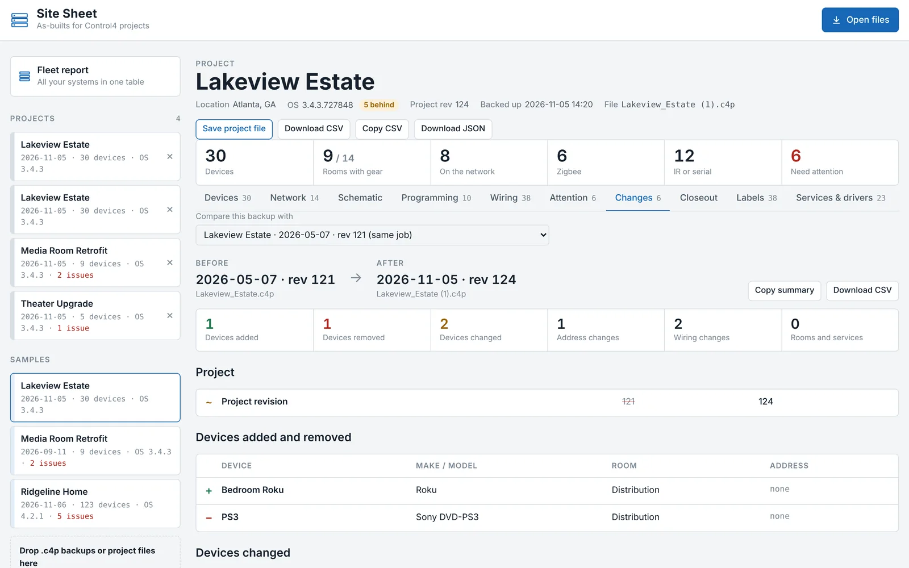
Inventory
Every device, room by room
Make, model, control method, IP or Zigbee ID, MAC, firmware and driver version for each piece of hardware, grouped by floor and room. Dimmers show their load name, so you see Hall Pendants instead of a row of identical Adaptive Phase Dimmer.
Search by anything (an IP, a MAC, a model number) and filter by category or control type. Export to CSV for Excel or Google Sheets.
Add the site's OvrC device list and it merges in without doubling anything up: devices are matched by MAC, then by IP, each only once. Composer devices pick up their live status and addresses, the switches and access points Composer doesn't know about are added, and anything ambiguous waits for you to decide.
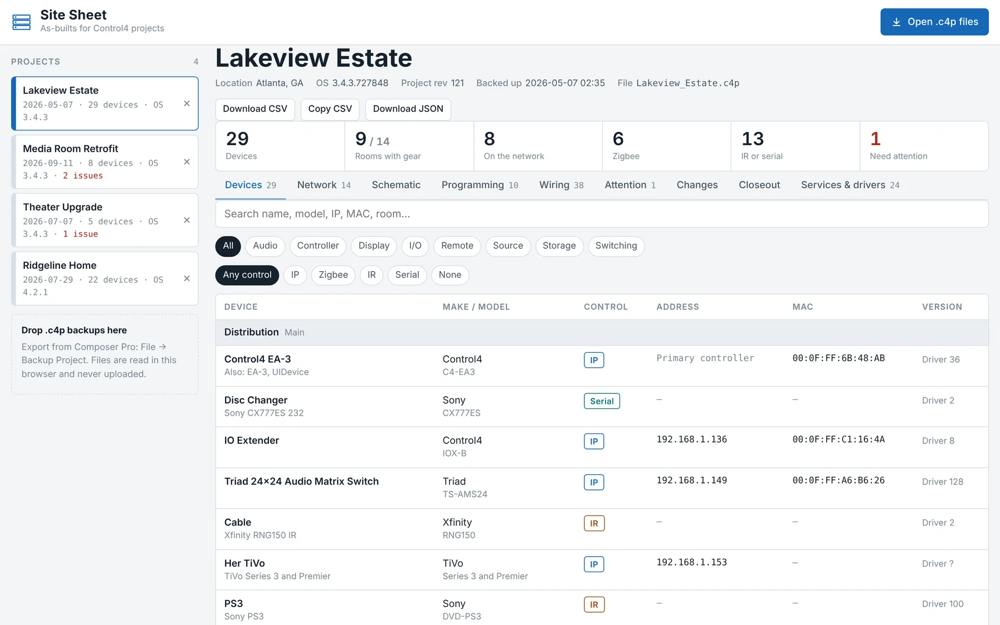
Closeout
A finished as-built to hand the client
The Closeout tab builds a print-ready packet from the project: a cover with your company, logo and service contact, a system overview with your notes, the schematic on its own landscape page, then inventory by room, wiring, network, open issues, changes since the last backup, and a sign-off page.
- Pick which sections to include. US Letter or A4
- The schematic prints with the layout you arranged and the wires you added
- Print it, or save it as a PDF for the job folder and the client
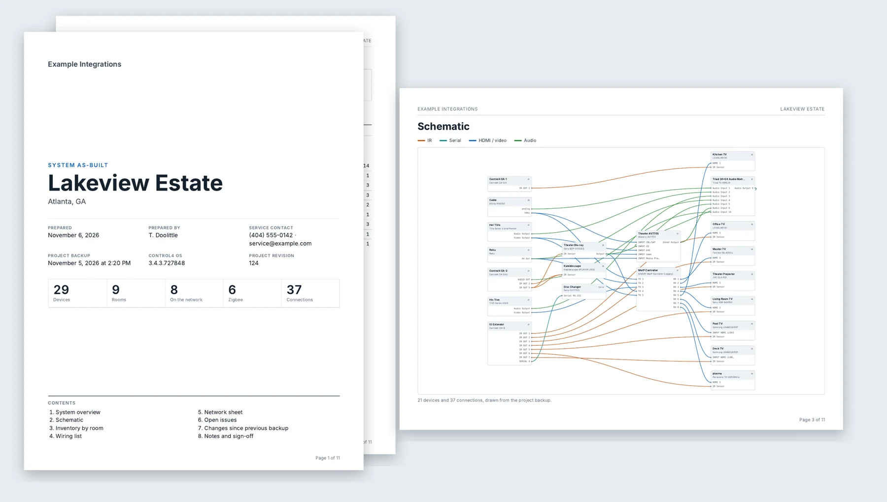
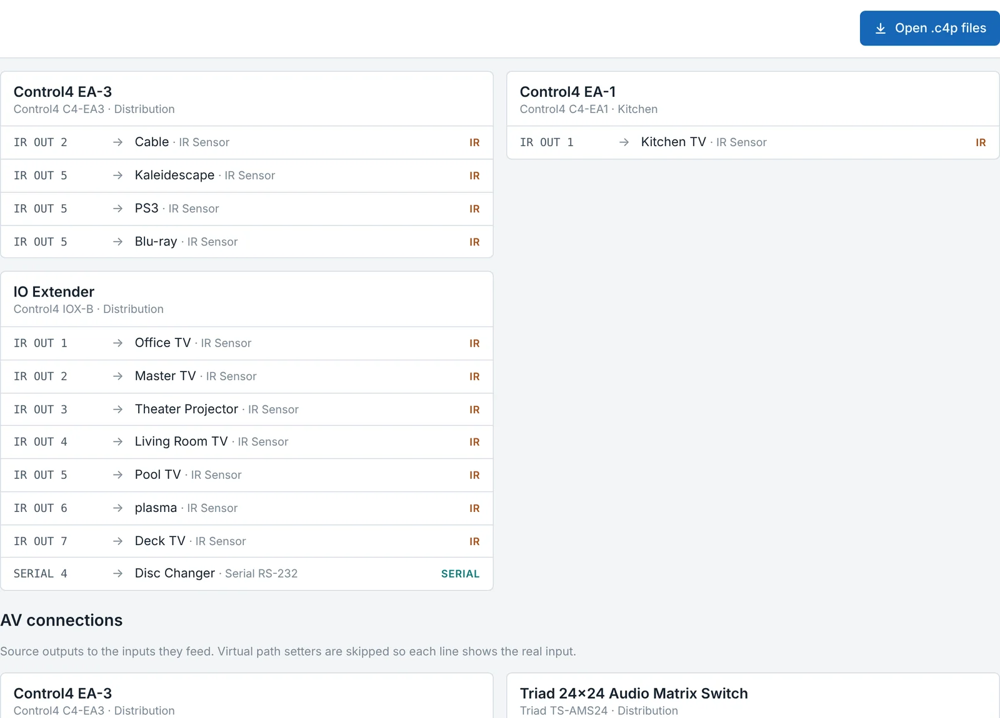
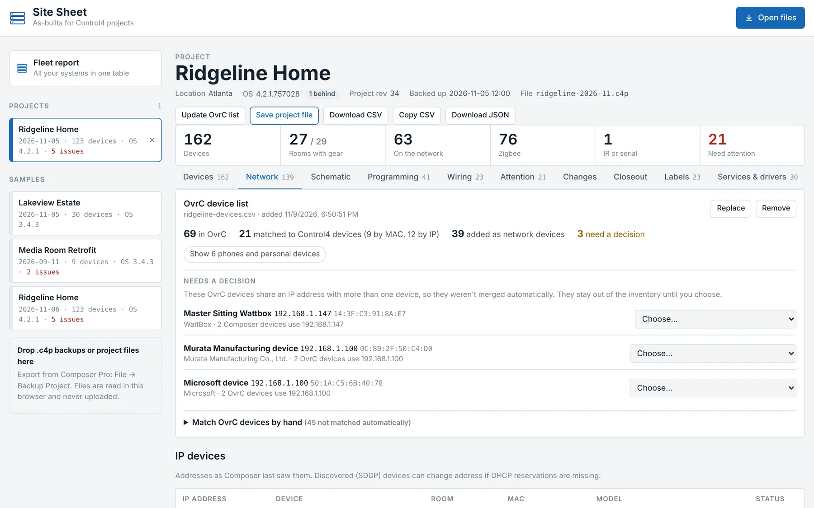
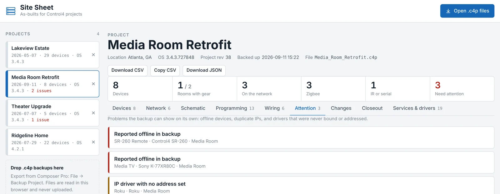
Client files stay on your computer
The backup is opened and parsed inside your browser or the desktop app. Nothing is uploaded, there's no account, and no server ever sees a client's name, address or network. Projects you open are remembered only in that browser, and the × next to a project forgets it.
Download
A 2.7 MB Windows app that works offline
One portable file, no installer. It uses the WebView2 engine built into Windows 10 and 11, saves exports through a normal Save dialog, and runs in the truck with no signal.
The exe isn't code-signed yet, so Windows SmartScreen asks once. Choose More info, then Run anyway.
- 1Back up the projectIn Composer Pro: File → Backup Project. Save the .c4p.
- 2Open it in Site SheetDrop one or several backups on the window. Each becomes a project in the list.
- 3Take the as-built with youExport the inventory as CSV and the schematic as SVG, or keep the app on your phone at the rack.
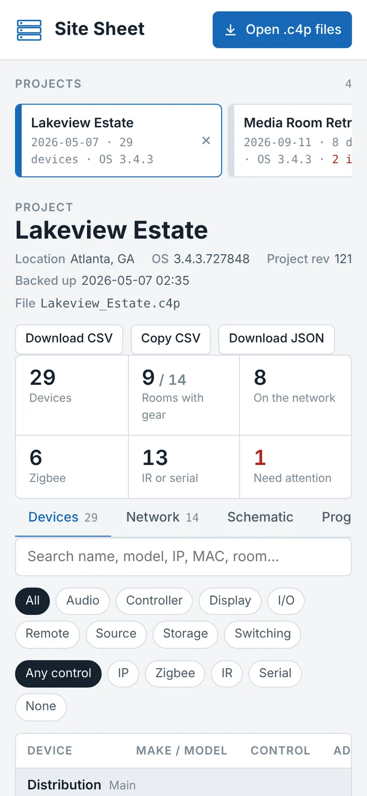